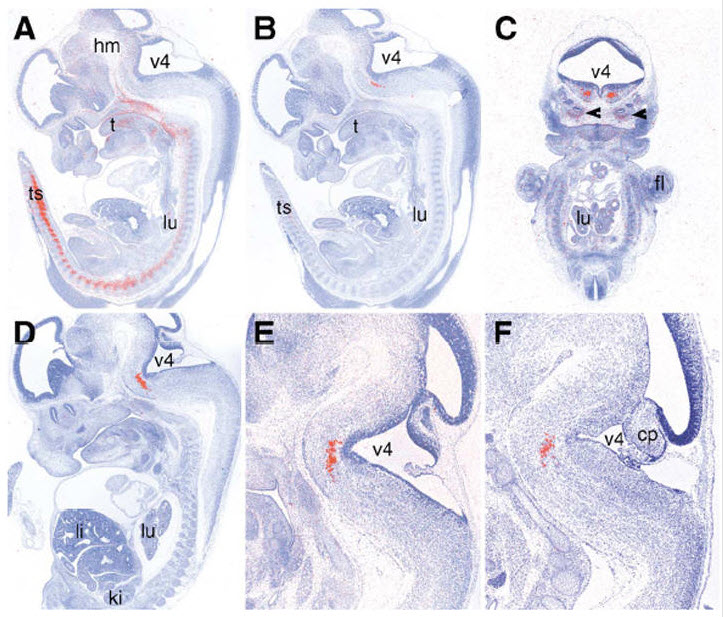

<!--Introduction---------------------------------------------->  
    <TABLE WIDTH="100%" BGCOLOR="#888888" BORDER="0" CELLSPACING="0" CELLPADDING="1">
       <TR><TD>        
       <TABLE BGCOLOR="#fffee8" WIDTH="100%"  BORDER="0" CELLSPACING="0" CELLPADDING="0">
          <TR><TD>        
          <TABLE BGCOLOR="#D9E4F8" BACKGROUND="../../images/hr.gif" WIDTH="100%"><TR><TD>
              <A NAME="About"></A><FONT SIZE="4"><B>&nbsp;Clinical Report </B></FONT>
          </TD></TR></TABLE>
  
          <TABLE BGCOLOR="#fffee8" WIDTH="100%" CELLPADDING=0>
              <TR><TH HEIGHT=3></TH></TR>
              <TR><TD WIDTH=10></TD><TD>
              <P>


<TABLE CELLPADDING = 5><TR><TD>
<P>
Below is an extract from a report from a clinical lab requested
to do an array CGH test for a patient.  There are 
several places in the report that provide access to the 
Genome Browser for further investigation.  These entry points to
the Browser are <B>highlighted</B> within.
</P>

<P>
At right is part of an image from a mouse embryo for the ortholog to human 
TBX1 gene (pane A) 
(via <A HREF = "http://genome.ucsc.edu/cgi-bin/hgVisiGene?hgp_doId=157012&db=hg18"
TARGET = _BLANK>VisiGene</A> utility) (right-click to enlarge).
</P>

<HR>

<P> &nbsp;
<P>image source: MGI
<BR> Reference: The T-box gene Tbx10 exhibits a uniquely 
restricted expression pattern during mouse embryogenesis.
<BR>Year: 2003 Contributors: Bush J.O.,Maltby K.M.,Cho E.S.,Jiang R.
</P>
</TD>
<TD>
<A HREF = "http://genome.ucsc.edu/cgi-bin/hgVisiGene?hgp_doId=157012&db=hg18"
TARGET = _BLANK BORDER = 0></A>
</TD></TR>
</TABLE>

</P>
<P>
        	    

		    </P>
                    </TD><TD WIDTH=15>
                </TD></TR></TABLE>
            <BR></TD></TR></TABLE>
        </TD></TR></TABLE>
